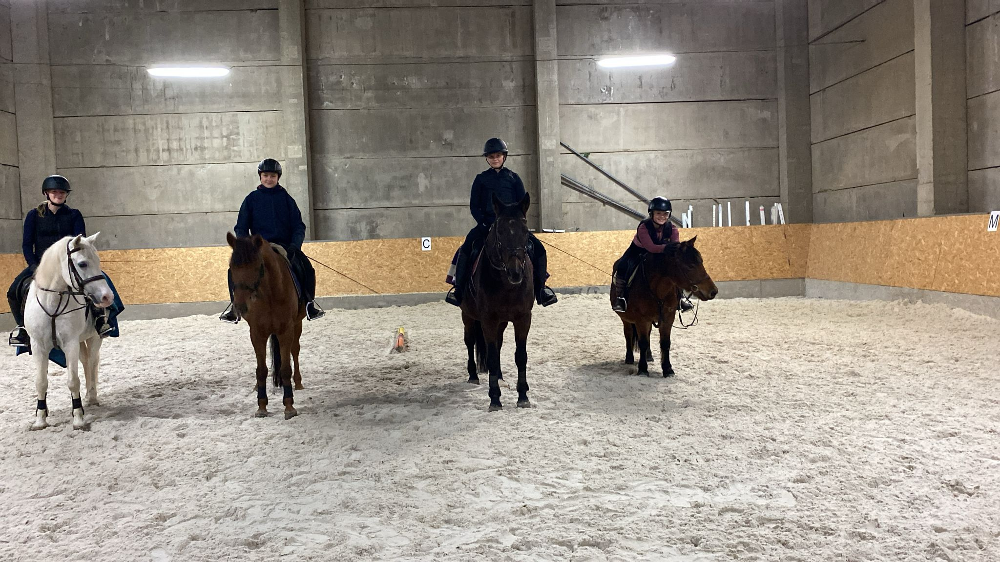
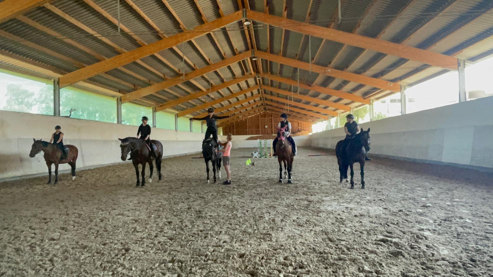

Výuka jízdy, základní a skokový výcvik

Nabízíme širokou škálu možností výcviku — jízdu na koni pro začátečníky i pokročilé, děti i dospělé. Výcvik probíhá celoročně v kryté hale a na venkovním kolbišti, osvětlení jezdeckých ploch je samozřejmostí.
Výcvik dětí vedeme od základů až po sport, na pony i na velkých koních. Každou lekci přizpůsobujeme věku, zkušenostem a jistotě konkrétního jezdce.
Individuální lekce — 10hodinové předplatné zahrnuje základní péči o koně ve stáji, čištění, sedlání, uždění, výcvik na lonži a posléze i samostatně na jízdárně.
Základní ovládání koně ve všech třech chodech. Kavaletová práce a dle úrovně i práce na dvou stopách. Skupiny po 3–4 jezdcích.
Pro pokročilé specializovaný skokový výcvik formou kavaletové práce i nižších parkurů. Příprava na závody ve skocích.

Při veškerých jezdeckých aktivitách klademe důraz na dodržování základních pravidel bezpečnosti jezdců a koní a na úrazovou prevenci s využitím všech bezpečnostních pomůcek.
Učíme jezdce citlivému přístupu ke koni jako ke kamarádovi. Jezdectví neznamená jen pobyt v sedle, ale spoustu povinností a dovedností s tím spojených. Kůň není tělocvičné nářadí, ale živý a citlivý tvor.
Licencovaný cvičitel ČJF
Dříve aktivní parkurová jezdkyně, nyní se již přes 10 let věnuje výcviku dětí i dospělých od úplných začátečníků po složení ZZVJ. Stále aktivně jezdí a pravidelně se vzdělává — účastní se seminářů a soustředění s kvalitními trenéry.